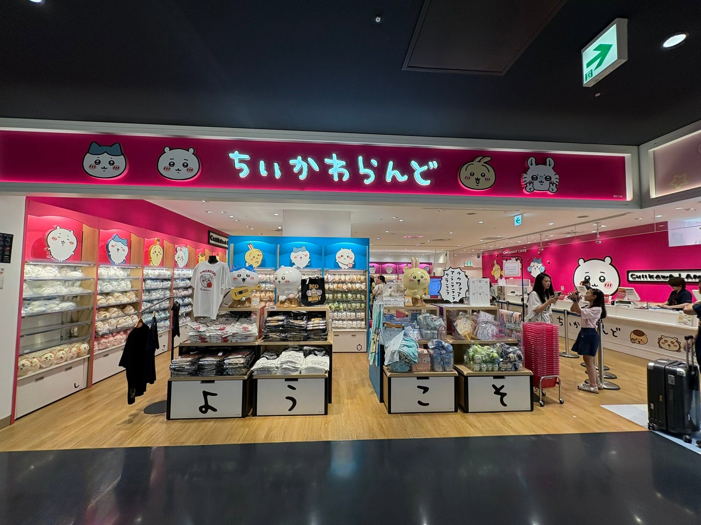
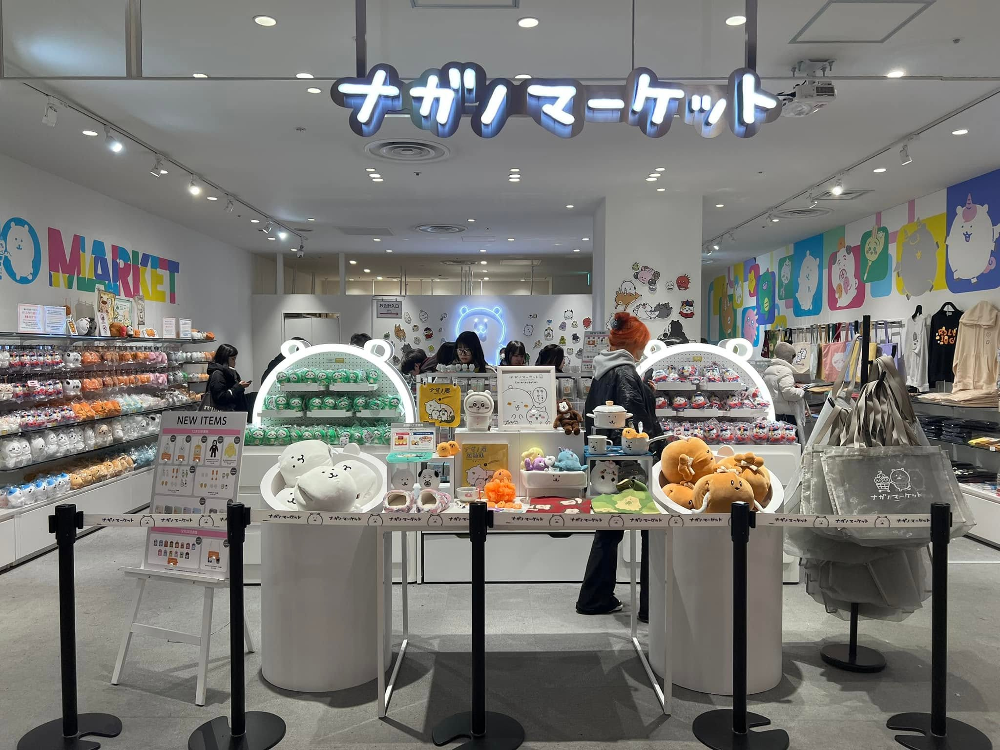

hololive production official shop Osaka Umeda
阪急三番街北館 B1
🍰 Sweets Paradise Umeda
步行約 5 分鐘
交通：從各線梅田站徒步 7 分鐘（距離大阪梅田站約 228 公尺）
營業時間：週一至週五 10:30–21:00・週六、週日、節假日 10:00–21:00
地址：大阪府大阪市北区角田町5番1号 楽天地ビル 2F
🚇 梅田 → 日本橋
御堂筋線到難波＋步行約 10 分鐘
御堂筋線班次密集，約每 4 分鐘一班（なかもず方向／天王寺方向列車皆停靠難波），不需要特別查時刻表。
📍 日本橋 ACG 聖地：行走路徑與動線規劃
第一階段：黃金十字路口區（前四站）
💡 這四家店近到不可思議，你完全不需要看導航，轉個身就到了！
14:00–15:00 🛍️ Animate 大阪日本橋店 (1F)
起點：先在 Animate 1 樓掃描最新的 hololive 和當季動漫新品周邊。
15:00–15:40 🎮 駿河屋 日本橋店
行走路徑：從 Animate 1 樓大門出來，往右後方（北方）看，隔壁過兩間店面就是駿河屋。
步行時間：約 30 秒。
攻略：在這裡瘋狂挖寶二手公仔與 VTuber 周邊。
15:40–16:20 📚 K-BOOKS 難波壹番館
行走路徑：從駿河屋出來，往斜對面（馬路對側）看，K-BOOKS 就在那裡。
步行時間：約 30 秒（過個小馬路）。
攻略：這裡的 hololive 二手徽章、立牌牆非常壯觀，直奔你推的角色專區！
16:20–17:00 🛍️ Lashinbang（指南針）日本橋本店
行走路徑：從 K-BOOKS 出來，直接過馬路回到剛才第一站 Animate 的大樓，搭電梯或手扶梯上 2 樓，整層就是 Lashinbang。
步行時間：約 30 秒。
攻略：與 Animate 新鮮貨不同，2 樓的 Lashinbang 是二手動漫周邊的寶庫，適合跟剛才在 K-BOOKS 看到的價格進行最後比價。
🚶♂️ 第二階段：前往終點站
17:00–17:08 🚸 從 Lashinbang 步行至 Mandarake Grandchaos
行走路徑：從 Lashinbang 下樓走到地面，沿著大馬路（堺筋）往左手邊（北，往難波／道頓堀方向）直走，一直走到大十字路口（會看到對面有「富士書房」或「大創百貨」），過馬路到對面，繼續往北走一點點，Mandarake Grandchaos 就會在你的左手邊。
步行距離：約 500 公尺。
步行時間：約 7~8 分鐘。
🛍 Animate 大阪日本橋店
西日本最大級 Animate，hololive、動漫周邊最齊
地址：〒556-0004 大阪府大阪市浪速区日本橋西1丁目1-3 池田ビル２号館 1階・2階
🎮 駿河屋 日本橋店
二手 hololive、公仔、VTuber 周邊
所在地點：大阪日本橋電器街
地址：〒556-0005 大阪府大阪市浪速区日本橋4丁目11-3
📚 K-BOOKS 難波壹番館
二手 hololive、VTuber、徽章、立牌
地址：大阪府大阪市浪速区日本橋4-10-4 日本橋太平樓
🛍 Lashinbang 日本橋本店
二手動漫周邊、徽章、立牌
地址：大阪府大阪市浪速区日本橋西1-1-3 アニメイトビル3階
📚 Mandarake Grandchaos
公仔、模型、絕版收藏、同人誌
地址：〒556-0005 大阪府大阪市浪速区日本橋4丁目12-6

17:15–18:00 CHIIKAWA LAND 心齋橋 PARCO 6F
建議先逛熱門商品

18:00–18:30 Nagano Market 心齋橋 PARCO 5F
同棟搭電梯即可
🍜 心齋橋商店街晚餐／自由逛街
可逛到晚上
⚾ 大阪京瓷巨蛋 觀戰日本職棒：歐力士 vs 福岡軟銀
Bs夏の陣2026 supported by SAMTY・パーソル パ・リーグ公式戦
日期：2026年8月28日（五）・開球時間：18:00
場地：京セラドーム大阪
取票方式：
於歐力士猛牛官方售票網「Ori Ticket」訂票時，取票方式選擇「球場取票」，可於以下地點領取：
① 球場櫃檯：
京瓷巨蛋大阪 — 二樓北出口售票處、三樓門票賣場
Hotto Motto Field神戶 — 內野坡道下票務處、右外野手側售票處、左外野手側售票處
② 自助售票機「Ticket Das」領取
🚶♂️ 從 Animate 步行至「大阪難波站」
從 Animate 大門出來往北直走，穿過千日前道具屋筋商店街或南海通，走到「大阪難波站（阪神／近鐵）」入口（步行約 12 分鐘）。
🚇 搭乘「阪神難波線」（阪神なんば線・尼崎方向）
乘車車站：大阪難波站
下車車站：ドーム前站（圓頂體育館前站／Dome-mae）
班次頻率：約 8~10 分鐘一班（車程僅 5 分鐘，經「櫻川」站，第 2 站即達）。
🏟️ 抵達 大阪京瓷巨蛋
從「ドーム前」站的 2 號出口出站，走出來正對面就是巨蛋入口！
🚃 從京瓷巨蛋 回大阪梅田
從京瓷巨蛋步行至 JR「大正」站（約 7 分鐘），搭乘 JR 大阪環狀線（內回り／大阪方向）直達「大阪」站（梅田），車程約 17 分鐘，票價 190 日圓，不需轉車。
大阪環狀線班次密集，晚上仍約每 5~10 分鐘一班，不需要特別查時刻表；賽後人潮多，大正站月台可能會比較擁擠。